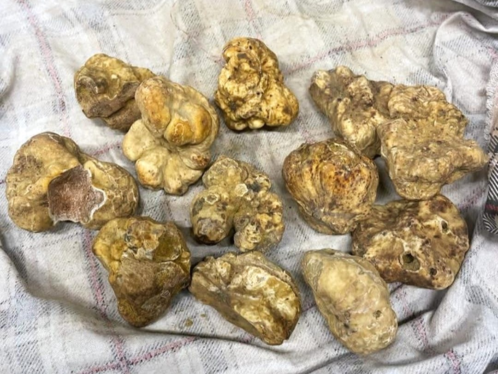
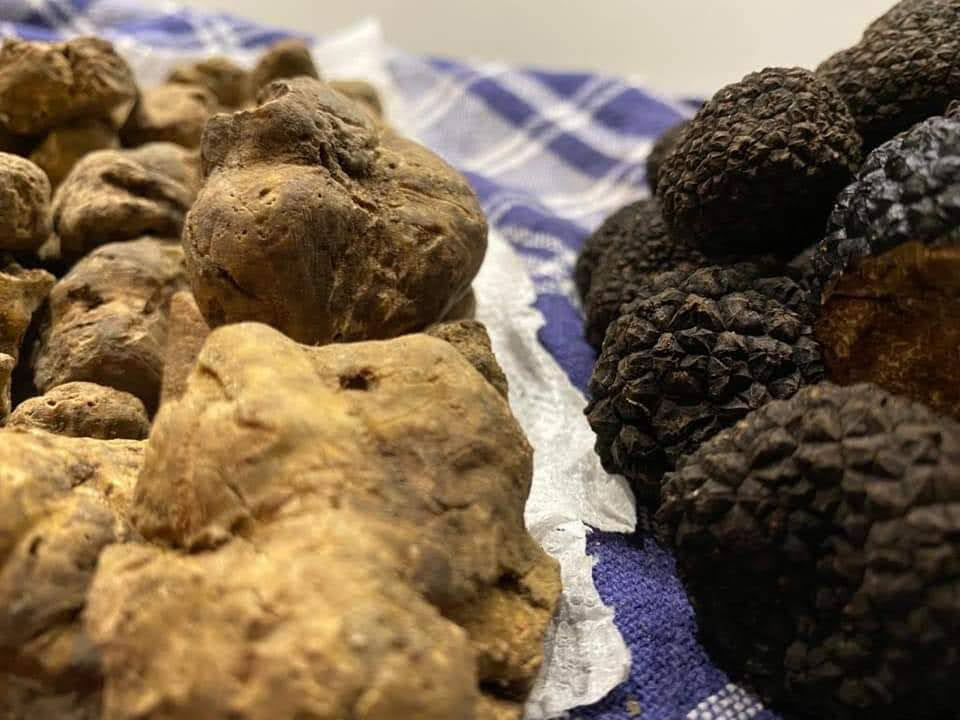
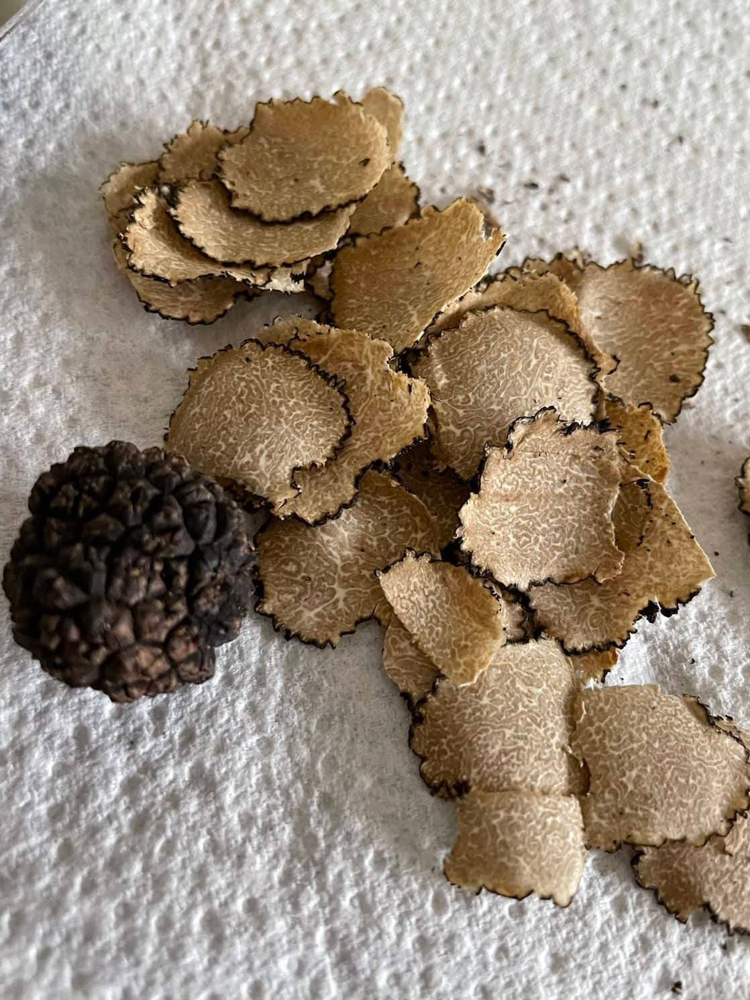

L’abbassarsi delle temperature e l’accorciarsi delle giornate, unito al cambiamento di colore e al cadere delle foglie, segnano l’arrivo di una stagione che regala immense soddisfazioni a chi conosce bene i boschi.
L’autunno sta facendo capolino.
Cadono a terra le castagne pronte per farle arrosto sul falò, si raccoglie l’uva dai vigneti ottenendone dell’ottimo vino.
Chi passeggia nei boschi si accorge invece della presenza di qualcosa che nei mesi prima era molto più raro: varie specie di funghi stanno spuntando un po’ ovunque.
Le mazze di tamburo, facilmente riconoscibili anche da distanza, crescono nei vasti prati.
I chiodini adornano le basi dei tronchi di molti alberi, squisiti porcini si raccolgono in zone collinari spingendo tanti appassionati a cercarli a spasso nei boschi.
Tra le tante specie di funghi ne esistono alcuni che restano però invisibili agli occhi dell’uomo.
Questi, crescono e hanno bisogno della presenza di alcune piante con le quali scambiano sostanze nutritive.
Stiamo parlando dei tartufi, chiamati anche ‘trifole’ dai cercatori di tartufi da noi in Piemonte.
Non sono altro che funghi sotterranei, simbionti della pianta vicino alla quale crescono.
Per stanarli, in Italia, usiamo i cani addestrati alla loro cerca. In Francia, invece, vengono impiegati i maiali, con un senso dell’olfatto più sviluppato dei cani, ma con un difetto: trovato il tartufo non resistono a mangiarlo.
Se il tartufo viene cavato dal terreno senza danneggiare la radice al quale é attaccato alla pianta, nuovi tartufi crescono in seguito esattamente come i funghi in superficie.
Spesso non si ha la precisa conoscenza della profondità al quale il tartufo si trova, la quale varia dal livello della superficie del terreno fino ad un metro sotto terra.
Una volta cavato dal terreno, si utilizza un vanghetto per estrarlo, si copre la buca fatta dal cane e si prosegue con la cerca di altre trifole.
 Il tartufaio, col suo cane addestrato alla cerca (o meglio, in Piemontese, il 'trifulaü', accompagnato dal suo 'tabüi'), si avventura nei boschi spesso all’alba o di notte per evitare di essere visto da altri trifulaü e mantenere così segreto il luogo di raccolta dei preziosi funghi.
Il tartufaio, col suo cane addestrato alla cerca (o meglio, in Piemontese, il 'trifulaü', accompagnato dal suo 'tabüi'), si avventura nei boschi spesso all’alba o di notte per evitare di essere visto da altri trifulaü e mantenere così segreto il luogo di raccolta dei preziosi funghi.
Ogni cane può essere addestrato alla cerca dei tartufi, ma alcuni danno risultati migliori di altri: il Lagotto Romagnolo è il cane più utilizzato per questo impiego. Varie specie di cani da caccia possono fornire ottimi risultati nella cerca, a patto che quest’ultimi perdano da piccoli l’istinto venatorio, cioè smettano di seguire le innumerevoli tracce di animali presenti nei boschi.
L’addestramento del cane parte proprio nei primi mesi di vita dei cuccioli.
Si comincia ad insegnare all’animale a riportare una pallina che contiene al suo interno uno straccio con pezzi di tartufo: la pallina viene lanciata a distanza e, quando il cane la riporta, lo si premia con coccole e cibo. Il cane si abitua, così, a riconoscere l’odore del tartufo, ed associa il trovarlo con un premio (in questa fase è importante smettere di cercare appena il cane mostra segni di distrazione).
Si passa poi a lanciare la pallina nell’erba alta, dove non è visibile al cane. Una volta riportata, si passa alla fase successiva: si scava una buca ponendoci la pallina, senza coprirla di terreno.
Se il cucciolo riporta la pallina con successo anche in questo caso, si ripete l’operazione coprendo questa volta la buca.
A questo punto, ci si trova già sulla buona strada e si può mettere alla prova il cane sotterrando la pallina nei boschi. Dopo poco tempo, il cane sarà pronto alla vera prova sul campo! Basterà portare il cucciolo in un’area con presenza certa di tartufi ed inizierà a seguirne le scie olfattive fino a scovare le trifole.
Per il cucciolo sarà tutto un gioco!

Sono varie le tipologie di tartufo esistenti, ma solo alcune sono di interesse gastronomico.
La maggior parte di queste rientrano tra i tartufi neri, mentre esistono soltanto due specie di tartufo bianco usate in cucina: il Bianco d’Alba (Tuber Magnatum Pico), anche detto Bianco Pregiato, ed il Bianchetto. Il primo ha un sapore delicato, differente da ogni altro, misto tra nocciola e fungo. Il colore al suo interno varia dal marrone chiaro al marrone scuro, con venature biancastre e a volte con presenza di sfumature rossastre. La sua raccolta avviene da Ottobre a Dicembre. É l’unico tartufo che ancora oggi non é coltivato, date le innumerevoli esigenze necessarie alla sua presenza e crescita: temperatura, umidità, pH e tipologia di terreno, poca vegetazione di sottobosco ed, infine, specifiche piante simbionti.
È da specificare infatti che ogni specie di tartufo, come per i funghi in superficie, richiede specifiche condizioni per poter crescere fino a determinate dimensioni (da una piccola nocciola alle dimensioni di un’arancia o poco più).
Il Bianchetto, dal sapore simile all’aglio, cresce da Gennaio ad Aprile, cioè una volta terminata la stagione del Bianco d’Alba. Il suo valore economico e gastronomico è considerato inferiore rispetto al Bianco D’Alba, ciò per via del suo differente sapore.
Lo Scorzone è invece il tartufo nero più comune durante i mesi caldi nella gran parte delle regioni italiane e in diverse località estere.
In autunno, terminata la sua stagione, un altro tartufo nero molto simile appare nel sottosuolo: l’Uncinato. Entrambi i tartufi sono cosparsi di verruche, dal colore simile all’asfalto, e sono più proni ad essere conservati rispetto al tartufo bianco (In frigo, anche per due settimane!)

Essendo composti prevalentemente da acqua, I tartufi deperiscono rapidamente e calano di peso col passare dei giorni.
È dunque da preferirne la consumazione il prima possibile, fino a 4/5 giorni dalla raccolta.
La conservazione ottimale è in frigo tra 1 e 4 °C, avvolti da due pezzi di carta assorbente, e contenuti all’interno di un contenitore con coperchio. Cambiare la carta giornalmente permette di mantenere i tartufi freschi più a lungo.
Bisogna sapere che, se conservati vicino a uova e formaggi, i grassi in essi contenuti tendono ad assorbire molto bene l’odore dei tartufi, donando un sapore ulteriore alle pietanze.
Infine, si sconsiglia il congelamento, poiché provoca una perdita di consistenza ed odore del tartufo.
Prima di consumare ogni tartufo, è necessario lavarlo accuratamente.
A tal proposito, prendete uno spazzolino e, mantenendo saldo il tartufo con una mano, mettetelo sotto il getto d’acqua fredda del rubinetto del lavandino. Spazzolate quindi delicatamente per rimuovere ogni pezzetto di terreno ancora attaccato.
Asciugate poi con un canovaccio ed ecco il tartufo pronto per essere grattato, con un apposito tagliatartufi, sul piatto che avete scelto per gustare questo speciale frutto della natura!